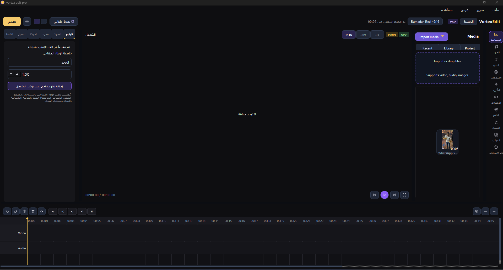
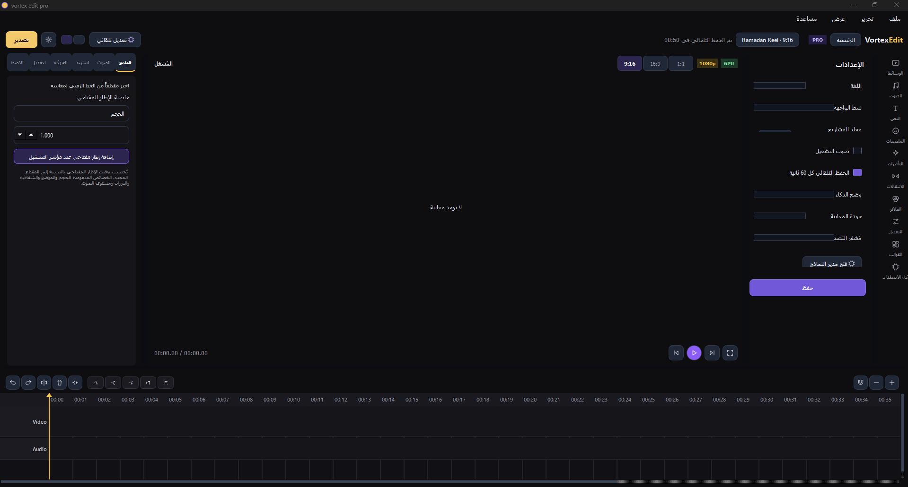

This page documents the three workspace profiles being implemented in the PySide6 application. The supplied screenshots remain the baseline audit rather than being treated as a final target.
Premiere-style · Professional NLE
Project and media bins on the left, a dominant Program Monitor in the center, editing controls on the right, and a resizable multitrack timeline below.
Search, bins, thumbnails, metadata and import.
Transport · timecode · zoom · fit
Video · Audio · Motion · Opacity · Keyframes
CapCut-style · Creator-first workflow
Fast tool discovery, larger touch-friendly controls, prominent media actions, simplified contextual properties and a creator-focused timeline.
Media · Audio · Text · Stickers · Effects · Captions
Quick preview controls and social aspect presets
Quick adjust · Animation · Speed · Background · AI tools
Vortex classic · Original supplied layout
Preserves the requested Vortex identity and the spatial arrangement in the supplied screenshots: properties on the left, preview in the middle, media drawer and tool rail at the right.
Selection-aware controls, grouped values, keyframes and clear empty states.
Aspect ratio · playback · timecode
Import, library, project items and tool categories.


Audit points carried into implementation
- Remove oversized empty preview proportions; make panel sizes adjustable and context-sensitive.
- Keep controls readable, grouped and aligned; eliminate low-contrast settings fields.
- Make the timeline height adjustable and preserve its LTR time axis in Arabic mode.
- Use the same functional editing engine for all three visual workspaces.
- Maintain project compatibility and keep workspace preferences outside project files.